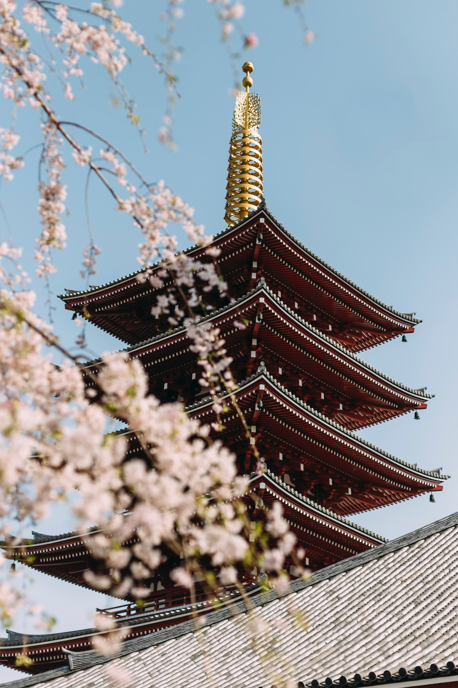

ABOUT JAPAN

일본은 동남아시아에 있는 국가다.
국토는 태평양에 있는 일본 열도의 네 개의 섬으로 이루어진 훗카이도, 혼슈, 시코쿠, 큐슈를 중심으로 주변에 산재한 작은 섬으로 구성되어 있다. 총 면적은 37만 7835 제곱 킬로미터이다.
6,852개의 크고 작은 섬으로 이루어진 군도 국가이며 이 중 혼슈, 훗카이도, 규슈, 시코쿠 등 네 곳의 섬이 일본 전체 면적의 97%를 차지하고 있을 뿐만 아니라 많은 섬들이 화산 활동을 통해 생겨났다.
일본의 인구는 약 1억 2,700만 명으로, 세계에서 열한 번째로 많다. 사실상의 수도인 도쿄도 및 주변 지역을 포함하는 도쿄 수도권은 세계에서 가장 큰 메트로폴리스이며, 이 지역에만 약 4,000만여 명 이상의 인구가 거주하고 있다.
현재의 일본은 1945년 포츠담 선언에 서명한 이후 1947년에 제정 및 시행된 일본국 헌법에 의해 법적으로 성립된 국가이다. 일본국 헌법이 제정되고 일본은 입헌군주제를 채택하고 있으며 상징적인 국가원수 역할을 하는 천황과 국민의 선거를 통해 선출되는 참의원, 중의원으로 구성되는 국회가 공존하고 있다. 현재의 천황은 아키히토, 국회의 집권당은 자유민주당이며 내각총리대신은 아베 신조이다.
경제력은 2017년 현재 명목, 구매력 평가 기준으로 세계에서 네 번째로 크다. 또한 세계에서 네 번째로 수출이 많으며 다섯 번째로 수입이 많은 나라다. 1991년 소비에트 연방의 붕괴 이후부터 2010년 중화인민공화국에 자리를 내주기 전까지 20여 년간 세계에서 두 번째로 국내 총생산이 높았으며 1993년 당시에는 룩셈부르크에 이어 1인당 명목 국내 총생산도 세계 2위를 기록하였으나 버블 붕괴 이후부터는 점차 하락세에 있어 현재는 13위권에 머무르고 있다.
일본은 선진국으로 인정받고 있으며, 인간개발지수는 2015년 기준 세계 20위에서 2016년 세계 17위로 동아시아 국가 중에서 1위이다. 또한 아시아 국가 중에서 G7에 들어가는 유일한 국가이며 유엔 안전 보장 이사회의 비상임이사국 지위를 보유하고 있다. 비록 일본은 헌법에 따라 군대 및 교전권을 포기하였으나 국토의 방위와 평화, 질서 유지를 위해 만들어진 자위대는 현대적이고 강력한 군사력을 유지하고 있다. 유엔 및 세계 보건 기구에 따르면 일본은 영아 사망률이 세계에서 세 번째로 낮고 세계에서 가장 높은 평균 수명을 기록하고 있다. 대졸자 초봉은 2010년 현재 약 235만엔으로, G7 국가 중에서는 가장 낮으며 이탈리아와 비슷한 수준이다.
출처 : wiki pedia
|